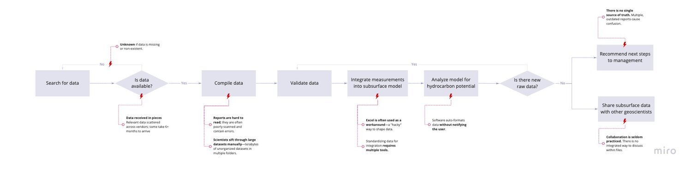
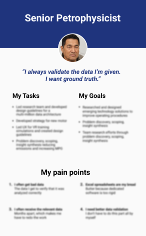
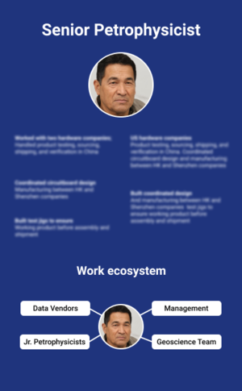
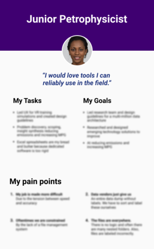
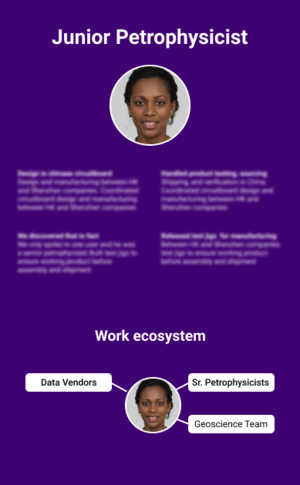
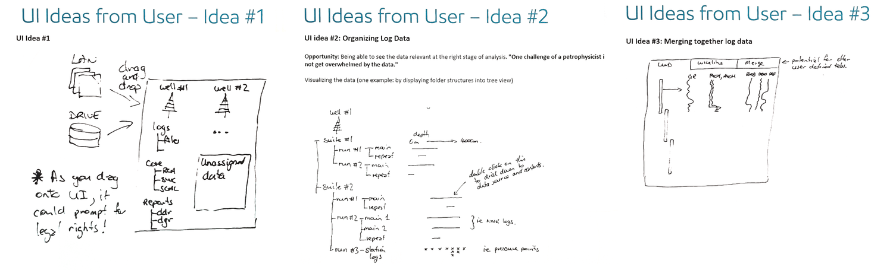
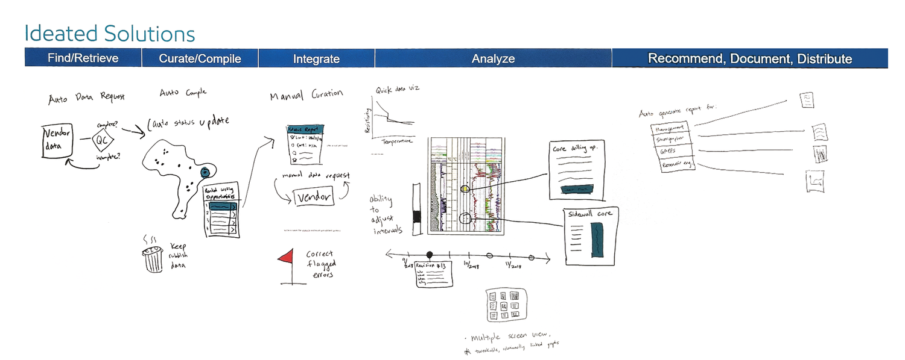
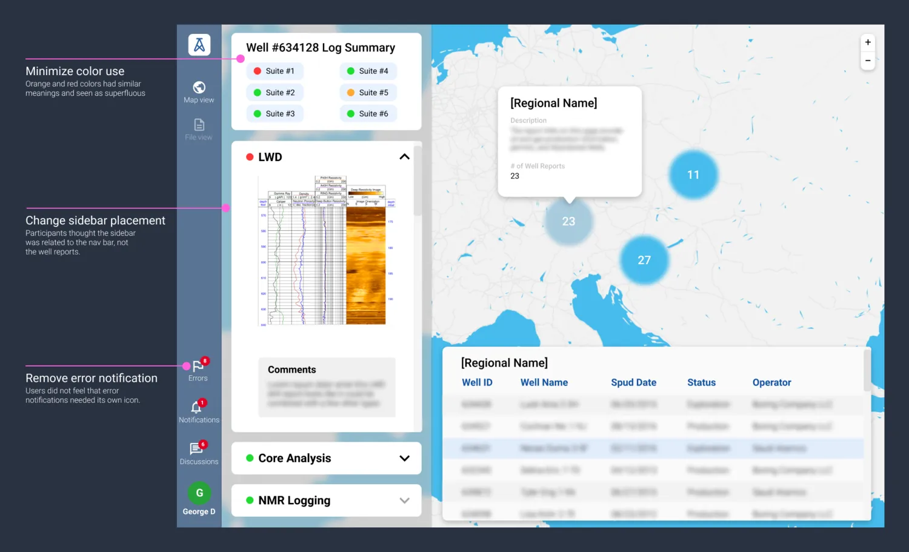
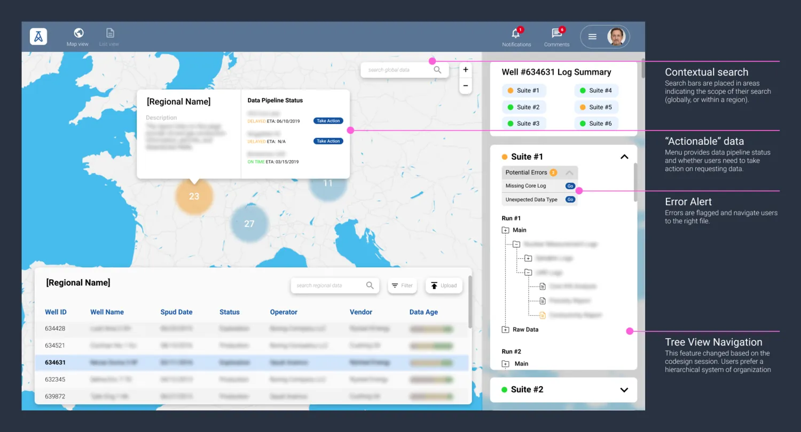

Case 02 · ExxonMobil · Research & interaction design
Improving upstream data analysis
Restructuring how petrophysicists understand subsurface data.
Duration
6 months
Role
Research Lead + Interaction Designer
Organization
ExxonMobil
Team
Upstream IT
01
01The original ask
Automate data preparation so petrophysicists can focus on critical work.
Senior petrophysicists are expensive, specialized experts who make core drilling decisions. However, they spend over 60% of their time on data cleaning and processing.
Leadership wanted to automate data preparation for petrophysicists, removing low-value tasks so they could focus on work supporting critical business decisions.
02
02Uncovering the real issue
Petrophysicists analyzed data they couldn’t trust.
Petrophysicists spent 25–30 hours per week on data prep, but the issue was more than wasted time — it was the lack of visibility and trust.
They were discovering critical errors 6–8 weeks into projects because they couldn’t verify data quality, pipeline status, or raw measurements upfront. Building automation that bypassed them for data validation would fail.
03
03The solution
Reduced data processing time by designing a workflow that aligned with mental models.
We designed a spatial data validation dashboard that gives petrophysicists real-time visibility into data quality and pipeline status before they start analysis. The system catches errors early, shows where data is stuck, and maintains access to raw measurements — making data prep faster without removing user control.
40%reduction in data prep time (25–30 hrs/week → 11–14 hrs/week)
85%of errors caught within the first week — versus 6–8 weeks before
$xxM*saved per year by preventing late-stage data corrections
Reduced ~4–6 weeks of project delays due to data quality issues
Accelerated site acquisitions — faster site evaluation for assessing potential drilling sites more quickly, cheaply, and accurately
04
04Challenge
It is expensive to keep datasets accurate and updated.
Petrophysicists described the data validation process as “herding cats in the dark.”
Just when they thought they had compiled all their drilling reports, a new dataset would appear and invalidate previous work. Teams kept discovering critical data errors late into projects, forcing costly rework.
05
05Research process
How is data relayed from one user to the next? How is it transformed?
I needed to map how data flows from raw measurements to final geological reports. I organized research questions into four categories:
Framing
People — who handles data at each stage?
Pain points — where do handoffs break down?
Priorities — what quick wins vs. transformative changes should we target?
Processes — how and why is data transformed?
Methods
2 contextual inquiries — shadowed petrophysicists during an active project
8 stakeholder interviews — data engineers, geologists, petrophysicists
Data flow mapping workshop with 8 cross-functional team members
2 data engineers (to understand technical constraints)

Synthesized interview findings became a flowchart of the current petrophysicist workflow for subsurface analysis (specifically, formation evaluation).




06
06Critical findings
Four findings that reframed the problem.
Simple errors have massive ripple effects.
Unit conversion errors and mislabeled wells don’t get caught until weeks into analysis. One junior petrophysicist told me about spending three weeks analyzing what she thought was Well A-12, only to discover it was mislabeled — it was actually B-09, in a completely different geological formation. She had to start over.
Why this matters: catching these errors at ingestion could save at least 15–20 hours per project.
Petrophysicists operate blind on data availability.
Teams waste days waiting for data that is stuck in legal review, already exists elsewhere, or was never collected. There’s no centralized system to check data status.
“I’ve waited a month for a dataset only to discover it never made it out of the wellsite. No one told me.”
Why this matters: visibility into the pipeline prevents false starts and allows teams to prioritize work intelligently.
Raw data access is trust.
Petrophysicists need to see original measurements to validate any transformed data.
“If I can’t see the raw gamma ray logs, I can’t tell you if the formation boundary is real or an artifact of smoothing algorithms.”
Why this matters: any automation that removes raw data access will be rejected by users.
Relevant data is fragmented across vendors.
A single analysis might require data from 8+ vendors, internal databases, and legacy systems. Files arrive over 6–12 months with no intuitive grouping.
Why this matters: the cognitive overhead of tracking scattered files slows every project.
07
07Pivoting from learnings
Augment — don’t automate — data validation.
Our original hypothesis was wrong. We assumed petrophysicists wanted us to automate data preparation so they could focus on analysis.
Humans need to be in the loop. Petrophysicists need to stay involved in data prep because that’s where they build intuition about data quality.
How might we surface critical data at the right time? Instead of removing petrophysicists from data prep, we focused on making data preparation radically more efficient while preserving their ability to validate data.
If I don’t see how the sausage is made, I can’t trust the sausage. You can’t take this away from me; you need to make it faster.
Senior petrophysicist, research participant
Design principle
Surface problems early, provide tools to investigate, and never hide the raw truth.
08
08Design exploration
I ran a co-design session with an expert user.
I ran a half-day workshop with a senior petrophysicist. Using his past projects as case studies, we sketched interface concepts and storyboarded ideal workflows.
Key insight: petrophysicists think geographically. They locate wells on a map mentally before diving into data. A list-based interface forces unnecessary cognitive translation from their usual mental model.

UI ideas sketched by the expert user during our co-design workshop

Storyboarding ideal workflows from past project case studies
Explored concepts
Concept A: Automated data validator
Concept B: Notification-based system
Concept C: Spatial data dashboard ← selected
09
09Interface design & testing
Three rounds of usability testing, five users, three success criteria.
I conducted three rounds of testing with 5 total users (3 petrophysicists, 2 geologists as proxies).
Success criteria
Users can identify data quality issues without reading documentation
Users can locate needed datasets within 30 seconds
Users understand what every UI element does without asking questions
Iteration 1 — Map view vs. list view
Map view: 4/5 users found target datasets in 18–25 seconds. List view: 5/5 users took 45–90 seconds and expressed frustration.
Issues found: color coding was ambiguous (“what does red mean?”), data age icons were too small to notice, and pipeline status was buried in a sidebar.

Iteration V1 — users validated that the map-based design reflected their mental models more accurately than a list-based view.
The map makes sense because I already know where the wells are geographically. Why would I search through an alphabetical list?
Usability test participant
Iteration 2 — Refining progressive disclosure
Changed: introduced a “freshness” color metaphor (green = fresh, yellow = aging, brown = stale), made error flags primary visual elements (“!” icons on map pins), and moved pipeline status to hover cards on each well.
Impact: 5/5 users immediately understood data freshness without explanation; 4/5 spotted error flags within 5 seconds of viewing the map. Remaining issue: pipeline status still felt “hidden.”
This view finally matches how I think. Why didn’t we do this years ago?
Usability test participant
Iteration 3 — Surfacing pipeline visibility
Changed: added a left-panel filter showing data pipeline stages (“Collected,” “In Transit,” “In Legal Review,” “Available”), made pipeline stage a first-class attribute visible on hover, and created an “Expected Data” section showing what should exist but hasn’t arrived.
Impact: 5/5 users successfully filtered wells by pipeline status, users called out “Expected Data” as “game-changing” for planning, and no UI elements caused confusion.
This ‘Expected Data’ section would have saved me two weeks on my last project. I would’ve known immediately that three wells were stuck in legal.
Usability test participant

V1 — first passV3 — shipped
Drag to compare V1 with V3. Iteration V3 significantly improved data visibility — users easily grasped “data age” from the color palette while data status surfaced action items.10
10Final design
Five features, each anchored to a research finding.
Map view browser
Wells displayed on an interactive map with color-coded freshness indicators. Users can zoom to regions, filter by data type, and see availability at a glance. Rationale: matches the spatial mental model petrophysicists already use — no translation between geography and abstract lists.
Proactive error detection
Automated checks flag unit inconsistencies, labeling errors, and suspicious values at data ingestion; errors appear as visual alerts on well markers. Rationale: catches issues when they’re cheapest to fix — at ingestion, not mid-analysis.
Transparent data lineage
Two-click access to raw measurements from any transformed dataset, with a visual timeline of transformation steps. Rationale: preserves trust by making the “sausage-making” visible — validation without friction.
Pipeline status awareness
A left panel shows all data stages — collected, in transit, stuck in approval, available — and an “Expected Data” section shows gaps. Rationale: eliminates the black box of availability; teams plan around data arrival instead of waiting blindly.
Relevant data grouping suggestions
Related datasets (logs, cores, seismic) are clustered by well and project, with custom collections. Rationale: mirrors how petrophysicists think about data relationships and cuts time spent hunting for files.
11
11Tech constraints
Designing within a 40-year-old data landscape.
Legacy database integration
Issue: data lived across 15+ disconnected systems, some dating to the 1980s; real-time freshness required new APIs
Solution: prioritized the 5 most-used databases for MVP based on user interviews, leaving 10 for Phase 2
Colorblind accessibility
Issue: the “freshness” color system failed for colorblind users
Solution: added pattern overlays (solid/hatched/dotted) and text labels on hover — validated with 2 colorblind users
Offshore connectivity
Issue: field teams on oil rigs have intermittent internet; the dashboard required live data
Solution: Phase 1 focused on onshore teams (75% of users); Phase 2 roadmap includes offline sync. I documented offline requirements for future designers
12
12Outcome
Impact after 6 months post-launch.
Efficiency gains
Data prep time: 25–30 hrs/week → 11–14 hrs/week (40% reduction)
Time to identify missing data: 3–5 days → 2 hours (96% reduction)
Error detection speed: 6–8 weeks → 3–5 days (85% faster)
Business impact
Estimated $xxM* annual savings in rework costs
Project timelines shortened by 2–4 weeks on average
Zero late-stage data errors in the pilot group during the 6-month period
Faster site evaluation for acquisitions
Adoption & satisfaction
Piloted with 12 petrophysicists across Houston, Calgary, and Singapore
95% user satisfaction (“would recommend to a colleague”)
87% daily active usage within the pilot group
Full rollout prioritized to 150+ global petrophysicists in 2020
13
13What I learned
Lessons from designing for expert users.
Domain expertise ≠ design expertise.
Petrophysicists knew their pain points but couldn’t articulate solutions. They said “automate everything” but really meant “make manual work faster.” I had to translate their needs into design principles. Lesson: trust users to tell you problems, not solutions — probe beneath feature requests to find the real need.
Preventing bad builds is a UX win.
I initially felt disappointed that interface design was far down the backlog, but our research prevented the team from building automated pipelines that would’ve been rejected by users. Lesson: in enterprise contexts, preventing bad builds is as valuable as shipping features.
Show work to build trust.
Petrophysicists initially resisted “black box” automation because they had experienced bad data ruining projects. Once I showed them exactly how validation worked, they became advocates. Lesson: transparency isn’t just good UX — it’s how you earn trust with expert users who have strong mental models.
Small sample sizes can be sufficient in specialized domains.
With only 50–60 petrophysicists at ExxonMobil’s Houston office, 3 interviews represented 5–6% of the user base. In specialized domains, users share similar workflows — depth matters more than breadth. Lesson: in enterprise B2B contexts, prioritize deep contextual inquiry over large sample sizes.
14
14Future roadmap ideas
How might we…
Proxy trust signals when raw data doesn’t exist? Some legacy wells only have processed data. How can we help users assess reliability when they can’t verify the source? Maybe: surface metadata transparency (who processed it, when, using what algorithms) and peer validation markers.
Balance data accessibility vs. cognitive overload? Users claimed they wanted complete data access, yet complained about being overwhelmed. Maybe: relevance ranking that surfaces likely-needed datasets while keeping everything accessible.
Crowdsource quality assessments? Petrophysicists currently validate data in isolation. Maybe: a “flag for review” feature that alerts colleagues when someone spots an issue, building institutional knowledge over time.
15
15Reflection
“The art of knowing what to leave undone is as important as knowing what to do.”
This project taught me that the best UX research changes what gets built. By proving that petrophysicists needed to stay in the data prep workflow, we prevented the product team from spending 6 months building unwanted automation.
If I could do one thing differently, I’d involve field teams earlier to address offline access from the start rather than deferring it to Phase 2.
*Certain details have been omitted due to disclosure policies.